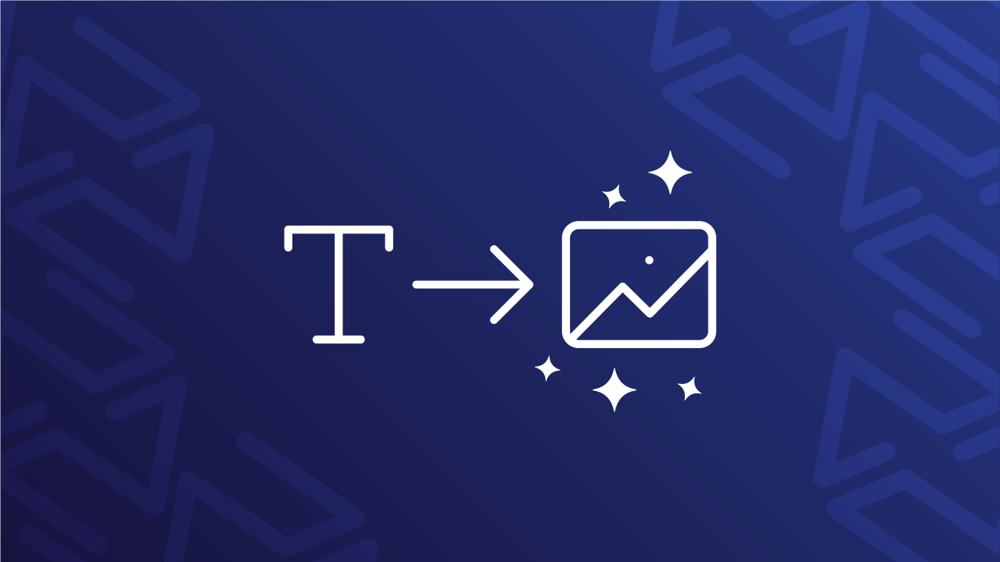
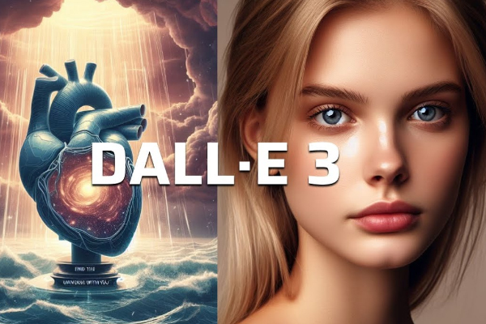
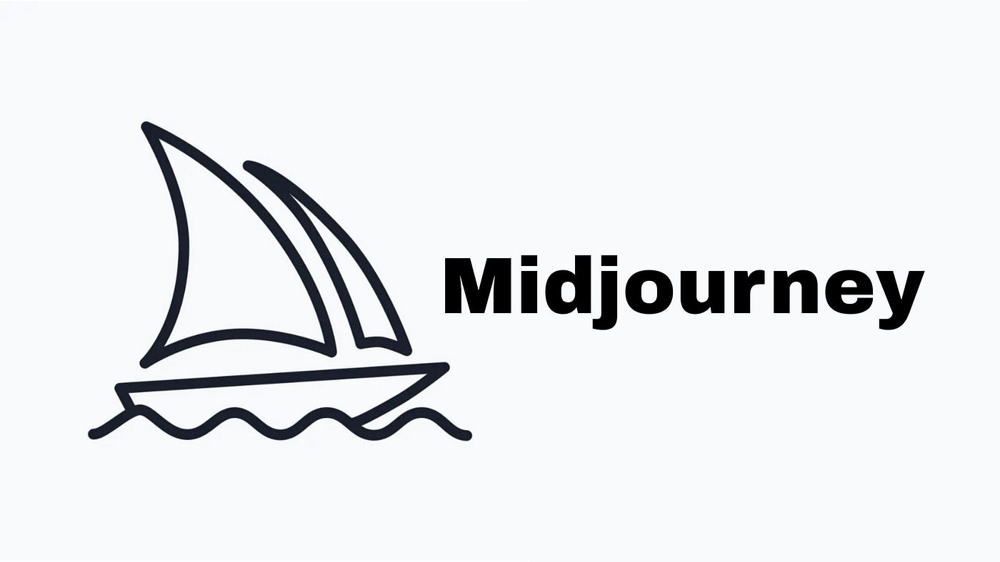
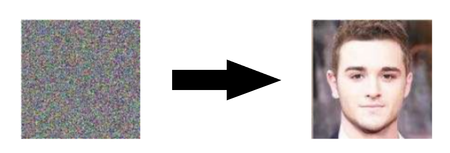

Modello Text-To-Image
Il modello Text-To-Image è un modello di machine learning che prende in input una descrizione in linguaggio naturale e produce un immagine che corrisponde a quella descrizione.
DALL·E
DALL·E 1, 2 e 3 sono modelli text-to-image sviluppati da OpenAI. La terza versione, più dettagliata, è stata rilasciata in ottobre 2023, attraverso l'abbonamento a ChatGPT Plus.
Midjourney
Midjourney è un'intelligenza artificiale generativa creata da Midjourney Inc. ed è accessibile dagli utenti attraverso dei prompt da inserire in un bot di Discord.
Stable Diffusion
Stable Diffusion è un modello text-to-image basato sulle tecnche di diffusione: L'AI viene addestrata aggiungendo rumore ai dati, ed essa inverte il processo recuperando i dati originali. Questo processo permette di generare immagini casuali di alta qualità.
